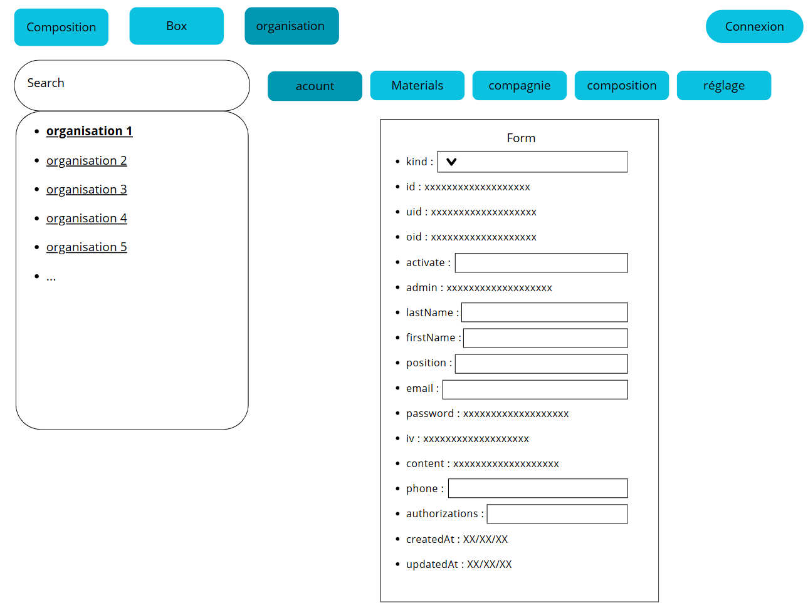
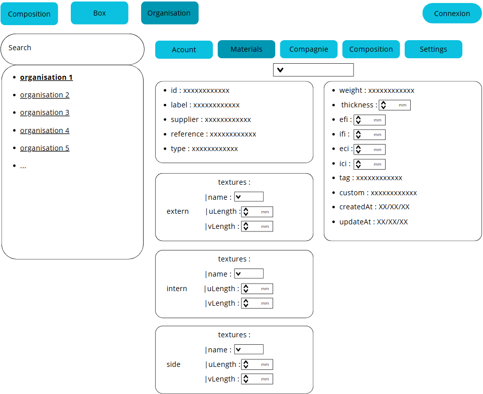

Mission réaliser
Mission 1
Comme précédemment évoqué, j'ai eu cette mission afin d'apprendre à utiliser les différents frameworks et l'utilisation des API dans les applications. Cette mission n'a duré qu'une semaine pendant mon stage, cette mission m'a permis d'apprendre suffisamment afin de pouvoir remplir les futures missions auxquelles je participerais. Cette application est un listage de Pokémon récupéré sur une API (PokéApi), je devais ensuite afficher l'image et les données du Pokémon sélectionné grâce à une requête, Ainsi que rajouté une barre de recherche permettant de filtrer par nom le/ les pokémon souhaité.

Mission 2
Ma seconde mission était des jeux de test sur l'application client, j'ai eu à communiquer les différents bugs et dysfonctionnements de l'application En expliquant comment atteindre le bug, ainsi que donner mes idées pour faciliter l'usage pour les clients. Étant donné que cette application est prévue pour des clients professionnels, je ne peux pas montrer les documents que j'ai eu à rendre pour cette mission. J'ai complété cette mission tout le long de mon stage.
Mission 3
Ma dernier mission a était séparer en deux étapes, la premier a était de préparer un visuel pour la partie administrateur utulisé que par les employé de Delta Code pour gérer les données clients. Pour la réalisation de ces visuel j'ai utulisé canvas et non une logiciel spécialisé du au connaisance que je possédé deja sur canvas et que je n'avais sur les autres. Ci-dessous quelque images des maquette.


La seconde étape a été de produire cette application avec différentes interfaces permettant de modifier les données de l'API client. Je n'ai pas eu l'occasion de finir cette mission avant la fin de mon stage, mais j'ai eu l'opportunité de bien avancer dessus afin de rentrer une partie non négligeable pour que Afin d'avancer l'entreprise sur cette mission.